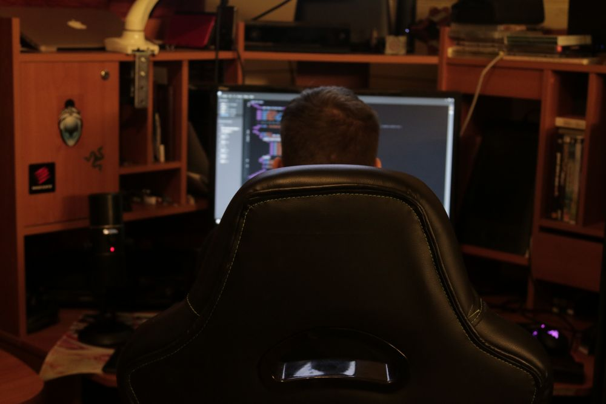

Min drøm er å holde på med utvikling som jobb. At jeg kan bidra med å lage noe som andre skal bruke, om det skal være en app eller nettside.
Som jeg har nevnt under siden om meg så har jeg hatt en interesse for IT siden min barndom. Derimot på den tid var det mer om skru ned og sammen gamle maskiner som både fungerte og ikke.
Så vokste det til å forstå datamaskiner på et mer avansert nivå. Nylig så fikk jeg en stor interesse for å begynne med koding og programmering.
Til å begynne med så var det mer som en hobby enn noe annet, men interessen vokste kraftig og jeg lengtet etter mer avanserte ting så jeg kunne lære.

Jeg fikk et inntrykk at hos dere i Appex kunne jeg lære blant annet hvordan jeg kan gjøre ting bedre. Du kan si mer på et profesjonelt nivå.
Jeg fikk også et inntrykk at dere har et veldig godt arbeidsmiljø på tanke med mailene Hein Tore har sendt.
Selvfølgelig så forstår jeg hvis dere ikke tar lærlinger i år, men hvis det skulle hende at dere ombestemmer dere så stiller jeg gjerne opp.
Mitt motiv er å mestre ting jeg allerede vett og lære noe nytt som kan.
På samme måte så håper jeg at ender opp med å lage noe som folk kommer til å bruke som for eksempel en app eller nettside.
Jeg ser opp mot den mørke himmelen og ser håp selv i de mørkeste tider.